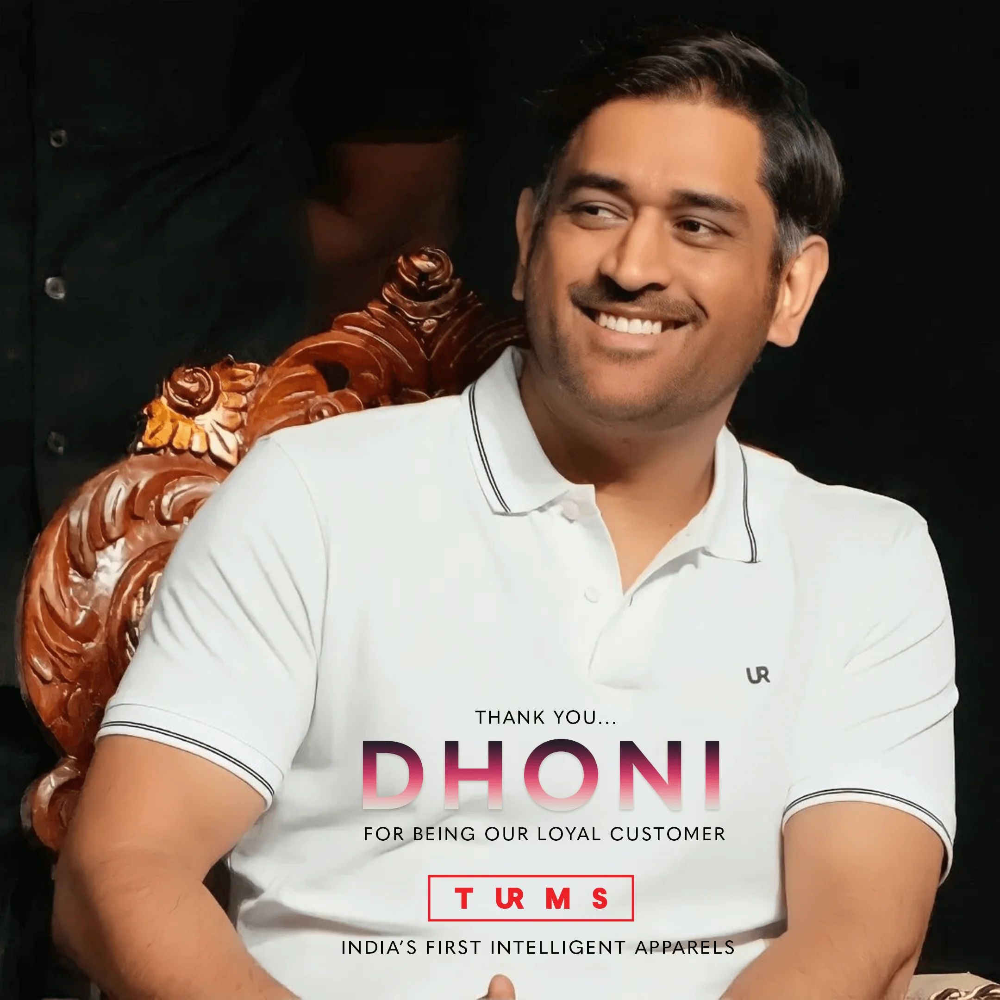
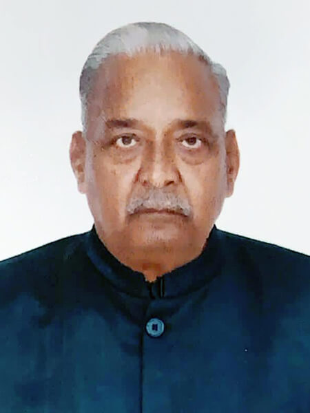
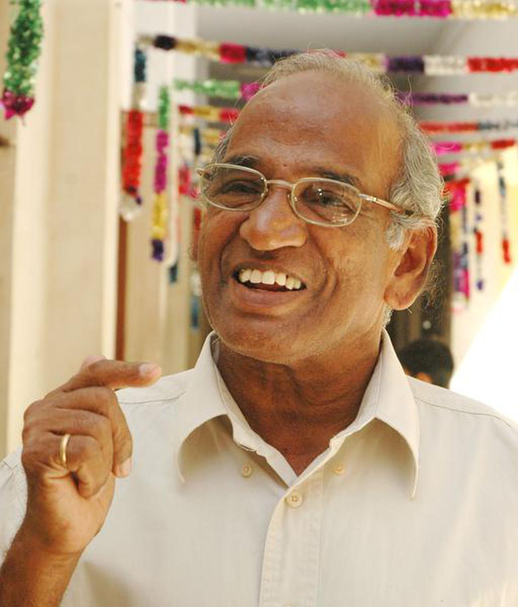
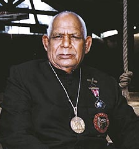
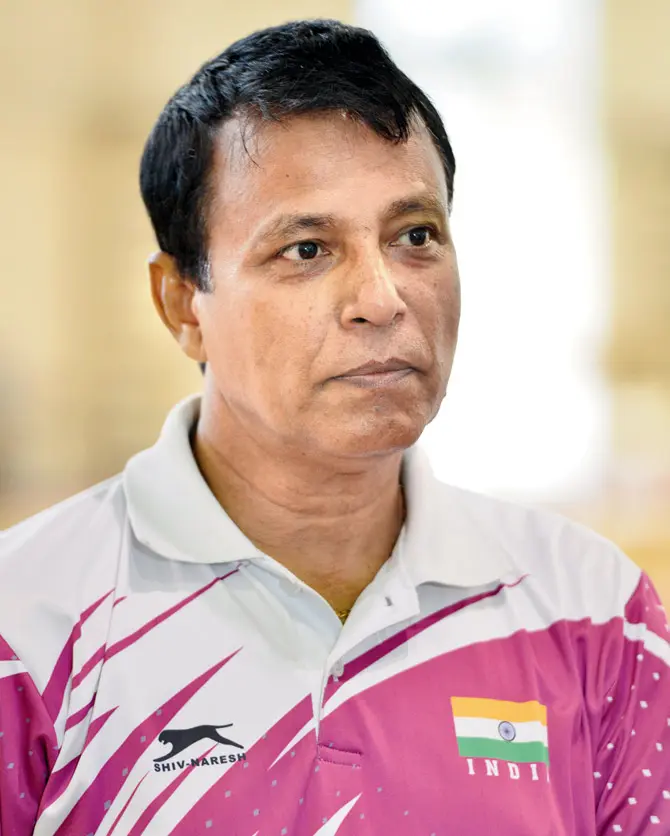

India honors its finest athletes, coaches, and adventure heroes every year through prestigious national awards. These awards recognize excellence in performance, commitment, and lifetime contribution to Indian sports.
|
🏅 Notable Recipients by Year:
| Year | Recipient | Discipline | Image |
|---|---|---|---|
| 1991 | Viswanathan Anand | Chess | |
| 2007 | Mahendra Singh Dhoni | Cricket |  |
| 2016 | P. V. Sindhu | Badminton | |
| 2021 | Sunil Chhetri | Football | |
| 2024 | Harmanpreet Singh | Hockey | |
|
🏅 Notable Recipients by Year:
| Year | Recipient | Sports | Image |
|---|---|---|---|
| 2010 | Dinesh Kumar | Boxing |  |
| 2012 | Dipika Pallikal | Squash |  |
| 2015 | Anup Kumar Yama | Roller Skating |  |
| 2018 | Neeraj Chopra | Athletics |  |
| 2024 | Aman Sehrawat | Wrestling |  |
|
🏅 Notable Recipients by Year:
| Year | Recipient | Why Famous in this Field | Image |
|---|---|---|---|
| 1985 | Om Prakash Bhardwaj | Boxing One of the first-ever coaches to receive this award |  |
| 1985 | O. M. Nambiar | Athletics Pioneering athletics coach, honored in the inaugural year |  |
| 1987 | Guru Hanuman | Wrestling Legendary wrestling guru who trained multiple champions |  |
| 2009 | Pullela Gopichand | Badminton Olympic-level badminton coach and academy founder |  |
| 2016 | Bishweshwar Nandi | Gymnastics Coached Olympic gymnast Dipa Karmakar |  |
|
🏅 Notable Recipients by Year:
| Year | Recipient | Field | Image |
|---|---|---|---|
| 2002 | Shahuraj Birajdar | Boxing |  |
| 2005 | Maruti Mane | Wrestling |  |
| 2007 | Varinder Singh | Hockey |  |
| 2011 | Shabbir Ali | Football |  |
| 2014 | K. P. Thakkar | Swimming |  |
|
🏅 Notable Recipients by Year:
| Year | Category | Entity |
|---|---|---|
| 2009 | Employment of Sportspersons and Sports Welfare Measures | Railways Sports Promotion Board |
| 2013 | Employment of Sportspersons and Sports Welfare Measures | Petroleum Sports Promotion Board |
| 2017 | Encouragement to Sports through Corporate Social Responsibility | Odisha Industrial Infrastructure Development Corporation |
| 2021 | Identification and nurturing of the sports talent over the past 25 years | Manav Rachna Educational Institutions(MREI) |
| 2024 | Sports for Development | Physical Education Foundation of India |